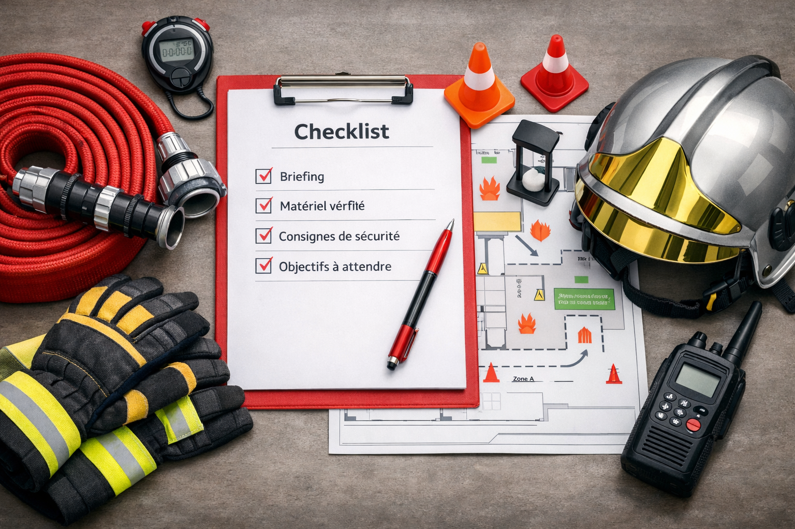

Bien Préparer sa Manœuvre Mensuelle
Guide méthodologique pour une préparation efficace et sécurisée.
Objectifs de la manœuvre
Valider les acquis techniques de l'équipe.
Assurer la maintenance opérationnelle du matériel.
Renforcer la cohésion et les automatismes de sécurité.
Avant la manœuvre (Check-list)
Définir le thème et le scénario de l'exercice.
Vérifier la disponibilité du personnel et des véhicules.
Préparer les zones d'évolution et balisage.
Consignes de Sécurité
Point de vigilance :
Port des EPI obligatoire. Désignation d'un responsable sécurité.